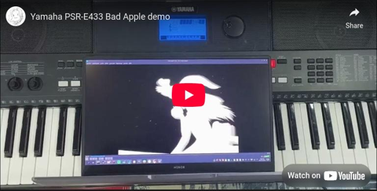
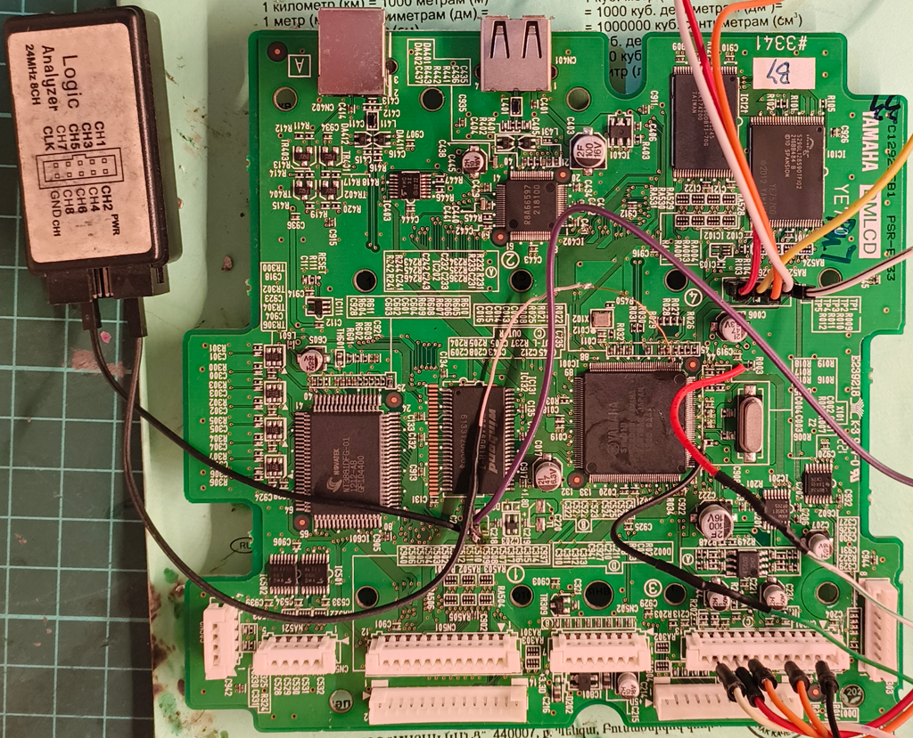
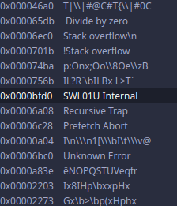
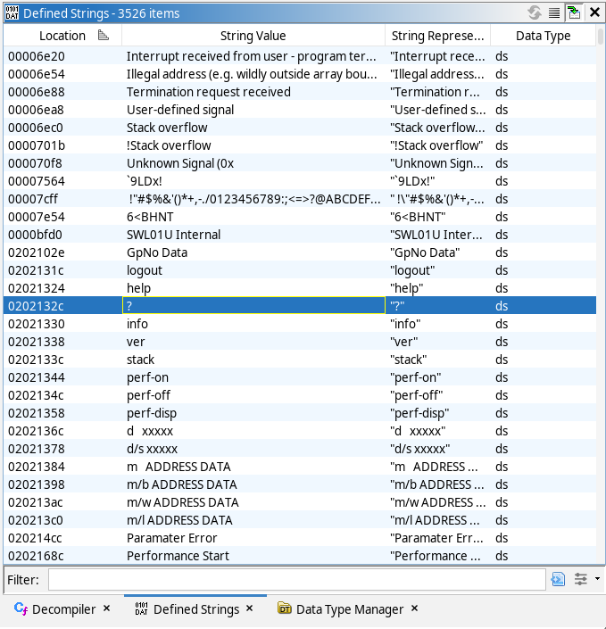
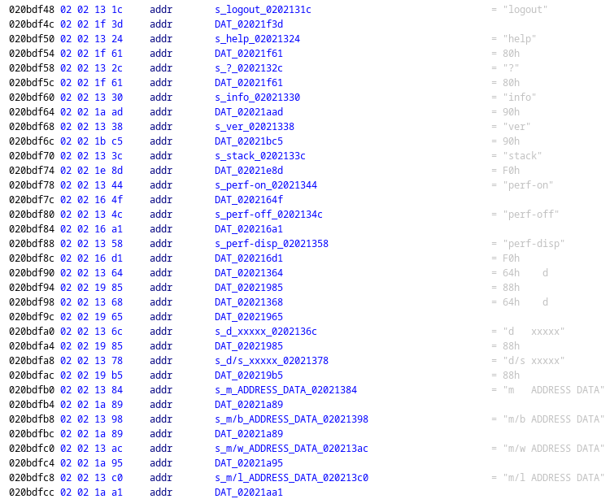
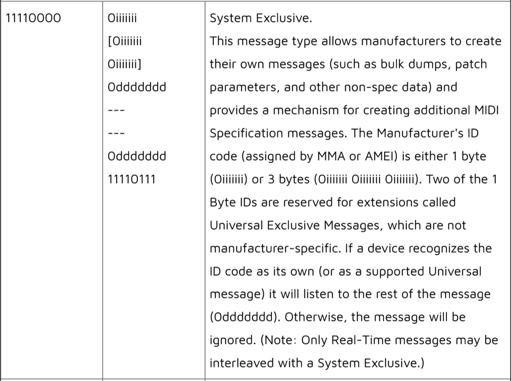
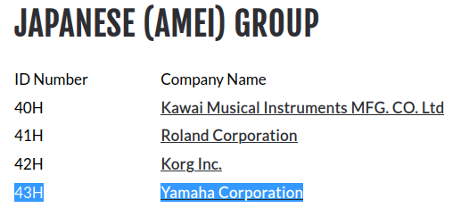
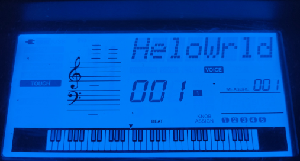
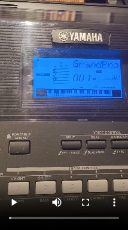
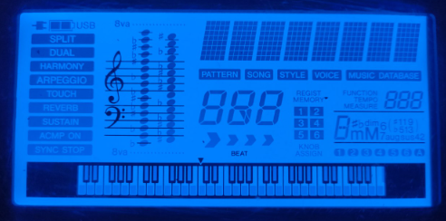

Ниже сделан перевод статьи, которая размещена на сайте автора psi3.ru.
Это статья о том, как был получен доступ к внутреннему шеллу синтезатора Yamaha PSR E-433. Данный шелл позволяет передавать произвольные данные, размещать их в памяти, а с помощью плясок со стеком можно даже запускать произвольный код прямо внутри синтезатора. Имея такой доступ, автор смог проиграть на алфавитно-цифровой части дисплея мультфильм Bad Apple.
Все, что написано в данной статье - это максимально круто. Исследование произведено на таком уровне, какого нигде больше в интернете найти невозможно. Особенно радует, что человек, судя по домену, русскоговорящий. Перевод делался в тот момент, когда я еще не знал, что автор - девушка. Поэтому повествование ведется от мужского лица. Да и кто вообще мог предположить, что прекрасный пол на такое способен?
Приятного чтения!
Первый в мире шелл-код через MIDI
Я получил удаленное выполнение кода через MIDI-сообщения, чтобы обмануть свой синтезатор и заставить его играть мультфильм Bad Apple на своем ЖК-дисплее. Это запись в блоге о разработке предельно сложного проекта в области обратного инжиниринга.

https://youtu.be/u6sukVMijBg
Введение
У меня уже очень давно есть синтезатор Yamaha PSR-E433, и пару лет назад я решил его вскрыть — отчасти потому, что он нуждался в чистке, а отчасти потому, что мне было очень любопытно узнать о его внутренностях. Открутив несколько винтов и откопав основную плату (с надписью «DMLCD»), я был весьма удивлен, обнаружив два флэш-чипа, один чип ОЗУ и крупный чип с надписью «YAMAHA SWL01U», который, как я предположил, должен был быть мозгом всей системы. Используя этот номер детали, я не смог найти никакой информации о чипе в Интернете, кроме статьи , в которой утверждалось, что он основан на ядре ЦП «SuperH». Такую архитектуру и набор инструкций (ISA) я впервые увидел как раз в этой статье. Поэтому, закончив чистку, я просто собрал синтезатор обратно. Но затем я постоянно стал задумываться о том, что же на самом деле скрывается под капотом у этого таинственного чипа.

DMLCD-плата в естественной среде обитания
Перенесемся на несколько месяцев назад, когда я снова разобрал этот бедный синтезатор – на этот раз чисто из любопытства. То, что вызвало любопытство - это руководство по обслуживанию похожего синтезатора (E443, у меня E433), которое я нашел в сети. В котором, среди прочего, была распиновка этого основного чипа. В руководстве были перечислены описания контактов, настолько заманчивые («TESTN – Тестовый режим», «PROTN – Определяет, является ли продукт прототипом»), что я просто должен был взглянуть на то, что происходит у него внутри. Также было два двунаправленных интерфейса UART, и, взглянув на схему, я увидел, что один из двух передающих контактов никуда не подключен, что предполагает, что чип, возможно, передает какой-то лог через этот контакт. О, и на плате также были аккуратно размечены контрольные точки JTAG – по сути, 5-контактный интерфейс для различных задач тестирования производственной линейки этих CPU-контроллеров и их отладки.
Итак, какие у меня были варианты на тот момент? Я мог:
Давайте начнем с первого подхода. Оба контакта выбора режима загрузки заканчиваются на N. Это говорит о том, что данные контакты активны на низком уровне, то есть сигнал считается активным, когда напряжение близко к нулю, в отличие от шины питания, которая в данном случае составляет 3,3 вольта. Схема гласит, что оба этих контакта подтянуты до 3,3 вольта с помощью резистора, поэтому мы можем просто замкнуть контакты на землю, чтобы активировать их. Именно это я и сделал; к сожалению, оказалось, что активация контакта TESTN просто не дала синтезатору загрузиться, а активация контакта PROTN вообще не изменила поведение синтезатора. Ну, по крайней мере, я его не испортил!
Далее, давайте попробуем взглянуть на интерфейс UART. Тот пин, о котором я говорил, никуда не вел, даже не был контрольной точкой, что означает, что мне пришлось подпаяться напрямую к 0,3-миллиметровому штырьку чипа. И в этот раз успеха не было, так как чип ничего не вывел ни в одной из 4 комбинаций сигналов TESTN и PROTN.
Теперь настала очередь JTAG. Несмотря на то, что следующий вариант (выпаивание флэш-чипа) был довольно пугающим, поскольку он означал, что мне придется построить флэш-дампер (у меня его не было), возиться с JTAG было еще страшнее по другой причине. Дело в том, что JTAG — это довольно абстрактный интерфейс, на основе которого поставщики могут построить все, что захотят. Чтобы общаться с устройством через JTAG, вам нужно иметь подробное описание схемы, которая строится на нем, которое обычно поставляется в виде файла BSDL . По сути, есть только одна команда, которую поддерживает почти каждое устройство, и это чтение IDCODE — 32-битного числа, которое действует как идентификатор типа устройства, с которым вы общаетесь. Давайте подключим J-Link к нашей плате и попробуем прочитать этот идентификационный код с помощью OpenOCD .
$ cat openocd.cfg
# Uh-oh, a continuity error!
# I've switched to an FT232R-based dongle
# instead of J-Link since I took the picture above.
adapter driver ft232r
transport select jtag
adapter speed 5000
$ openocd
Open On-Chip Debugger 0.12.0
Licensed under GNU GPL v2
For bug reports, read
http://openocd.org/doc/doxygen/bugs.html
Info : only one transport option; autoselect 'jtag'
Warn : Transport "jtag" was already selected
adapter speed: 5000 kHz
Info : Listening on port 6666 for tcl connections
Info : Listening on port 4444 for telnet connections
Info : clock speed 3000 kHz
Warn : There are no enabled taps. AUTO PROBING MIGHT NOT WORK!!
Info : JTAG tap: auto0.tap tap/device found: 0x3f0f0f0f (mfg: 0x787 (<unknown>), part: 0xf0f0, ver: 0x3)
Warn : AUTO auto0.tap - use "jtag newtap auto0 tap -irlen 4 -expected-id 0x3f0f0f0f"
Warn : gdb services need one or more targets defined
Ну, это уже кое-что. IDCODE отображается как 0x3f0f0f0f, что подозрительно красиво. Настолько подозрительно, что я трижды проверил свою проводку, но нет, похоже, это настоящий IDCODE устройства, которое после быстрого поиска в Google показалось, что оно принадлежит либо микроконтроллеру STMicroelectonics STR7xxx, либо Atmel SAM7xxx, оба из которых были основаны на ядре ЦП ARM7. Моим единственным вариантом было предположить, что я имею дело с настоящим ядром ARM7TDMI, таким же как и то, на котором основаны эти микроконтроллеры. С другой стороны, неправильное обращение к устройству через JTAG рискует привести к катастрофическим повреждениям, поскольку некоторые реализации интерфейса предоставляют очень низкоуровневый доступ к оборудованию, даже ниже, чем машинный код, который выполняют ядра ЦП. Есть небольшая вероятность выпустить волшебный дым, когда вы неправильно инструктируете устройство на таком низком уровне, если обстоятельства обернутся против вас. В любом случае, я это сделал; Я сообщил OpenOCD, что имею дело с ядром ARM7TDMI, и он с радостью подчинился.
$ cat openocd.cfg
adapter driver ft232r
transport select jtag
adapter speed 5000
jtag newtap swl01u cpu -irlen 4 -expected-id 0x3f0f0f0f
target create swl01u.cpu arm7tdmi -chain-position swl01u.cpu
$ openocd
Open On-Chip Debugger 0.12.0
Licensed under GNU GPL v2
For bug reports, read
http://openocd.org/doc/doxygen/bugs.html
Info : only one transport option; autoselect 'jtag'
Warn : Transport "jtag" was already selected
swl01u.cpu
Info : Listening on port 6666 for tcl connections
Info : Listening on port 4444 for telnet connections
Info : clock speed 3000 kHz
Info : JTAG tap: swl01u.cpu tap/device found: 0x3f0f0f0f (mfg: 0x787 (<unknown>), part: 0xf0f0, ver: 0x3)
Info : Embedded ICE version 1
Info : swl01u.cpu: hardware has 2 breakpoint/watchpoint units
Info : starting gdb server for swl01u.cpu on 3333
Info : Listening on port 3333 for gdb connections
По крайней мере, в этот момент магический дым, на котором работает вся электроника, все еще находился внутри чипа. Я нервно подключился к OpenOCD через GDB и попытался приостановить и возобновить выполнение программы. Я был очень удивлен и взволнован, увидев, как ток, о котором сообщал мой лабораторный блок питания, предсказуемо реагировал на мои команды. Вся печатная плата потребляла около 115 мА при работе, и около 98 мА при паузе, что было очень хорошим признаком того, что я общался с ядром ARM7TDMI! В тот момент у меня не было другого способа проверить, действительно ли останавливается процессор или нет.
Снятие прошивки
Итак, похоже, что мне даже не придется отпаивать флэш-чип, чтобы сдампить прошивку! И я уже знаю, на каком ISA основан чип, так что мне не придется копаться в образе прошивки, чтобы это выяснить! Заглянув в документацию для ARM7TDMI, можно увидеть, что вектор сброса находится по адресу 0, так что давайте посмотрим, какие данные находятся по этому адресу.
|
(gdb) x/2xw 0 # eXamine 2 heX Words at location 0 0x0: 0xe59ff018 0xe59ff018 (gdb) x/2i 0 # eXamine 2 Instructions at location 0 0x0: ldr pc, [pc, #24] @ 0x20 0x4: ldr pc, [pc, #24] @ 0x24 |
Запрос GDB на чтение двух инструкций по адресу 0
Да, ладно! Это прыжок (безусловный переход, сделанный путем изменения регистра PC), как я и ожидал. Следующая инструкция — это какой-то другой вектор, и это тоже прыжок. Выглядит примерно так. Да, мы определенно на правильном пути! Я знаю размер флэш-чипа (16 Мбайт), так что давайте просто выгрузим 16 Мбайт данных, начиная с адреса 0, в файл, загрузим его в Cutter и посмотрим, какие секреты он содержит.
Я очень неопытен в области обратного проектирования, но одно я знаю точно: текстовые строки — это кладезь легко извлекаемой информации о программном обеспечении. Вот почему первое, что я делаю, начиная проект по RE (реверс-инжинирингу) — просматриваю раздел «Строки» в инструменте RE. Этот проект не стал исключением, и я был очень рад увидеть такие строки, как:
и самое главное:

Секция строк в Cutter
Что мне не понравилось, так это то, как несколько строк, которые были в полученном образе памяти, повторялись каждые 64 КБ. Так, например, строка «SWL01U Internal» содержалась по адресам 0x0000bfd0, 0x0001bfd0, 0x0002bfd0 и так далее. И это повторение (вероятно, вызванное примитивной конструкцией декодера адреса внутри чипа), и сама эта строка намекали на то, что я взял дамп какой-то памяти внутри самого чипа, а не одного из внешних флэш-чипов, как я изначально представлял. Я пришел к выводу, что этот чип SWL01U содержит 64 КБ ПЗУ.
Инструкция в векторе сброса была переходом на адрес 0x02000000, который, как я думал, на самом деле мог быть внешним флэш-чипом на этот раз. Я снова сделал 16-мегабайтный дамп, начиная с этого адреса, и был рад, что на этот раз не нашел никаких повторений. Кроме того, я заметил большое количество строк, которые я мог распознать только с помощью синтезатора, например, «GrandPno», «Tr1 will be OverWritten!» и «BogiWogi».
Итак, что мы знаем на данный момент? Мы знаем, что сам чип содержит 64-килобайтное ПЗУ, которое сразу же передает управление внешнему 16-мегабайтному флэш-чипу при запуске. ПЗУ находится по адресу 0x00000000, а флэш начинается с 0x02000000. У нас есть дампы обеих памятей, и теперь мы можем начать реверс прошивки этого синтезатора, чтобы, как мы надеемся, получить больше информации о его основном чипе.
Разбор прошивки
После того, как я около часа смотрел на флэш-изображение в Cutter, мне стало совершенно очевидно, что этот инструмент RE просто не справляется и что мне нужно заменить его на что-то более мощное. Я рад сообщить, что Ghidra оправдала мои ожидания.
Теперь нам нужно немного пофилософствовать. В моих глазах RE похожа на игру в сапера. Вы начинаете с пустого поля, не зная состояния ни одной из ячеек, то есть не зная, содержит ли каждая отдельная ячейка мину или нет. Когда вы обнаруживаете состояние ячейки, у вас есть контекст, чтобы вывести состояние соседних ячеек. В игре «Сапер» у вас нет определенного направления, в котором вы двигаетесь. Вы никогда не говорите: «В этой игре в сапер я хочу идти вверх, несмотря ни на что», вы просто позволяете числам подталкивать вас в направлении, в котором легче всего идти в данный момент. Я утверждаю, что это также верно для RE. Как только вы узнаете, что делает функция или переменная, вы внезапно немного больше понимаете о функциях и переменных, которые зависят от тех, чье значение вы только что вывели. Может быть полезно не ставить какую-либо конкретную цель в проекте RE, а вместо этого позволить сложной сети переплетенных функций и переменных направлять вас к пониманию системы в целом.
Итак, с чего начать? Прямо сейчас у нас есть две точки входа, с которых мы можем начать разбирать прошивку: вектор сброса и текстовые строки. Я попробовал обе, просто проводя ночь за ночью, изучая каждую следующую функцию на основе новых идей, полученных при изучении предыдущей. Этот процесс не очень захватывающий для наблюдения со стороны, поэтому я не чувствую необходимости возвращаться и описывать свои шаги здесь. Это просто цепочка простых логических выводов, которые распространяются по кодовой базе. Как те маленькие флажки, расставляющиеся по полю в игре «Сапер».
В прошивке есть одна подсистема, о которой, как мне кажется, стоит упомянуть, поскольку она играет важную роль во всей этой истории с «Bad Apple»: Shell. Пока я копался в разделе «Defined Strings» Ghidra, я заметил кластер из нескольких строк, которые выглядели так, будто это был какой-то список команд для какой-то оболочки:

Строки «help», «?», «info», «ver» в адресах, которые находятся близко друг к другу
В RE центральное место занимают так называемые «xrefs» (перекрестные ссылки). Когда вы смотрите на символ (функцию или глобальную переменную), xrefs сообщают вам, какие другие символы используют (ссылаются) на символ, на который вы смотрите. На снимке экрана выше большинство наших строк имеют одну xref. Давайте проследим за каждой из них и посмотрим, куда они нас приведут:

Последовательность ссылок
Здесь мы видим последовательность пар ссылок, где первый элемент в паре всегда является именем команды, а второй элемент — указателем на некоторую функцию. Только первый элемент в этой последовательности ссылается напрямую, что наводит меня на мысль, что это обычный массив в языке Си из Си-структур, состоящих из двух членов. Давайте дадим название этому массиву, чтобы, когда мы встретим эту переменную, используемую где-то в будущем, мы бы сразу поняли, что это такое.
Давайте теперь посмотрим на код. Обычные программы (например, файлы .exe или ELF) состоят из разделов с четкими обозначениями того, какие данные они содержат. Например, раздел .text содержит исполняемый код, а раздел .rodata содержит данные только для чтения, которые требуются коду. К сожалению, встроенные системы обычно не используют эти файлы, а вместо этого сбрасывают код и данные в одну большую кучу. Это также означает, что нет абсолютно никакой надежды на восстановление имен и местоположений переменных и функций (именуемых обычно символами). Без метаданных символов поток инструкций — это просто поток байт. К счастью для нас, Ghidra была запрограммирована, по крайней мере, распознавать границы большинства функций, что она, как правило, делает очень хорошо.
Так как я впервые имел дело с ARM-ассемблером, функция декомпилятора C в Ghidra оказалась для меня очень полезной. К сожалению, из-за полного отсутствия отладочных символов, ее вывод все еще довольно сложен для обработки. Взгляните на эту функцию, которая ссылается на массив, который мы рассматривали ранее. Не вчитывайтесь в нее, просто просмотрите:
void FUN_02022008(char *param_1)
{
int *piVar1;
char cVar2;
int iVar3;
char *pcVar4;
undefined4 *puVar5;
if (DAT_060078c6 == '\0') {
iVar3 = FUN_020214e0(param_1,(char *)0x20bdf3c);
if (iVar3 == 0) {
FUN_02021f9c();
DAT_060078c6 = '\x01';
}
}
else if (DAT_060078c6 == '\x01') {
iVar3 = FUN_020214e0(param_1,"#0000");
if (iVar3 == 0) {
FUN_02021fb4();
DAT_060078c6 = '\x02';
}
else {
FUN_020213f8((byte *)0x2022098);
DAT_060078c6 = '\0';
}
}
else {
puVar5 = (undefined4 *)0x20bdf48;
do {
pcVar4 = (char *) FUN_02021528(param_1,*puVar5);
if (pcVar4 != (char *)0x0) {
cVar2 = *pcVar4;
while (cVar2 == ' ') {
pcVar4 = pcVar4 + 1;
cVar2 = *pcVar4;
}
jump_to_1(pcVar4,puVar5[1]);
return;
}
piVar1 = puVar5 + 2;
puVar5 = puVar5 + 2;
} while (*piVar1 != 0);
FUN_02021fe8();
}
return;
}
Необработанный вывод декомпилятора C
Как я уже сказал, поскольку Ghidra не имеет абсолютно никакой информации о типах или символах, полученный код на C — это не то, что вы обычно пишете в своих исходниках. Функции и глобальные переменные не имеют осмысленных имен и вместо этого ссылаются на них по их адресам. Локальные переменные также не имеют осмысленных имен, и они ограничены всей функцией, а не каким-либо конкретным блоком. Иногда Ghidra думает, что что-то является локальной переменной, когда на самом деле это лучше представить как временный результат выражения. Это абсолютно не вина инструмента: вся эта информация, которая делает код простым для понимания, стирается при его компиляции, и структурная информация о символах удаляется.
Понимание подобного "тяжело обработанного кода" — вот что так сложно в RE, и это одна из тех вещей, которым можно научиться, долго с работая с подобными объектами. С этого момента, ради ясности, я буду представлять вам очищенный код на языке Си только после того, как разберусь в нем. В любом случае, мы явно имеем дело с неким конечным автоматом. Обратите внимание на общую структуру этой функции:
void function() {
if(global_var == 0) {
if(/* condition */)
global_var = 1;
} else if(global_var == 1) {
if(/* condition */)
global_var = 2;
else
global_var = 0;
} else {
if(/* condition */)
global_var = 0; // performed by a subordinate function
else
action();
}
}
Есть два состояния, в которых функция делает очень мало, и одно состояние, в котором функция делает много. Судя по строкам, на которые ссылаются первые два состояния (это строки «login» и «Passwd Error»), эта функция реализует некий интерфейс входа и позволяет нам выполнять команду только если мы вошли в систему. Функция всегда вызывается только одной другой функцией, поэтому давайте проверим ее:
void FUN_020220f0(void) {
while(global_var_1 != global_var_2) {
char ch = global_var_3[global_var_1];
global_var_1 = global_var_1 + 1 & 0xff;
yet_unknown_function(ch); // manipulates "global_var_4"
if(ch == '\r') {
function_from_before(global_var_4);
global_var_5 = 0;
}
}
}
Эта функция пробегает по какому-то буферу и вызывает другую функцию для каждого символа, который она извлекает из буфера, и вызывает только функцию, которую мы рассматривали в предыдущем абзаце, для каждого символа '\r' (возврат каретки). Более того, буфер, похоже, является кольцевым размером 256 байт. Давайте назовем некоторые переменные и функции на базе того, (как я думаю), что они делают, основываясь на этих новых идеях:
void shell_process_input(void) {
while(shell_input_buf_r != shell_input_buf_w) {
char ch = shell_input_buf[shell_input_buf_r];
shell_input_buf_r = shell_input_buf_r + 1 & 0xff;
shell_feed_char(ch); // manipulates "shell_command_buffer"
if(ch == '\r') {
shell_run_command(shell_command_buffer);
shell_edit_position = 0;
}
}
}
Функция «shell_process_input»
Давайте еще раз назовем некоторые переменные и вернемся к нашей функции «shell_run_command», на этот раз с еще большим количеством обозначений (я пропустил большинство скучных и простых символов):
void shell_run_command(char* command_input) {
if (shell_login_state == 0) {
if (shell_compare_command(command_input, "login") == 0) {
shell_ask_passwd(); // prints "passwd? "
shell_login_state = 1;
}
} else if (shell_login_state == 1) {
if (shell_compare_command(command_input, "#0000") == 0) {
shell_login_ok(); // prints "login OK"
shell_login_state = 2;
} else {
shell_print("Passwd Error\r");
shell_login_state = 0;
}
} else {
// actually run the command
}
}
Функция “shell_run_command”
Если мы углубимся в функцию shell_print, то увидим множество пока неизвестных передач данных в глобальные переменные. На эти глобальные переменные ссылаются другие части кода (как во флэш-памяти, так и во внутреннем ПЗУ), которые записывают данные в загадочные адреса, расположенные по адресу 0xfxxxxxxx, который, как я предполагаю, является областью памяти, используемой для связи с различными периферийными устройствами внутри чипа.
Итак, что мы знаем об этой ракушке?
Давайте перечислим потенциальных кандидатов на различные интерфейсы, поверх которых может работать эта оболочка:
Если это UART, то он определенно недоступен на нашем варианте платы, но тем не менее код не должен сильно изменять данные, которые он хочет отправить, поскольку UART работает на уровне байтов. Если это USB, то он должен работать поверх MIDI и, таким образом, должен манипулировать данными таким образом, чтобы их можно было отправить по MIDI тем или иным способом. Если это JTAG, то он должен работать поверх DCC и должен использовать специальные инструкции, которые обращаются к DCC. Давайте подробнее рассмотрим, как именно наша функция shell_print "искажает" данные:
void shell_print(char* data) {
memcpy(global_var_1, global_var_2, 8);
global_var_1[24] = 0xf7;
// process data in 8-byte blocks first
for(size_t i = strlen(data); i >= 8; i -= 8) {
char ch = *(data++);
for(int j = 0; j < 8; j++) {
global_var_1[8 + (j * 2)] = ch >> 4;
global_var_1[8 + (j * 2) + 1] = ch & 0xf;
}
pass_on_to_next_stage_of_printing(global_var_1, 25);
}
// process the tail
size_t tail_size = 8;
for(int i = 0; *data; i++) {
char ch = *(data++);
global_var_1[8 + (i * 2)] = ch >> 4;
global_var_1[8 + (i * 2) + 1] = ch & 0xf;
tail_size += 2;
}
global_var_1[tail_size] = 0xf7;
tail_size++;
pass_on_to_next_stage_of_printing(global_var_1, tail_size);
}
Обзор функции «shell_print»
Кажется, она разбивает каждый байт данных на два 4-битных полубайта и оборачивает каждый из них в свой собственный байт. Каждый блок данных, который она передает на следующий этап в этом конвейере передачи данных, начинается с тех же 8 байт данных, за которыми следует полезная нагрузка, и наконец заканчивается байтом 0xf7. Давайте используем GDB, чтобы посмотреть, что это за постоянные 8 байтов:
(gdb) x/8xb 0x06000000 # eXamine 8 heX Bytes at location 0x06000000
0x6000000: 0xf0 0x43 0x73 0x01 0x52 0x19 0x00 0x00
GDB читает 8 байт в "global_var_2"
В целом пакет оболочки, содержащий строку «>», выглядит следующим образом:
|
F0 43 73 01 52 19 00 00 03 0E 02 00 F7 └──────────┬──────────┘ └─┬─┘ └─┬─┘ ├┘ │ │ │ │ │ │ │ ╰── fixed footer │ │ ╰────── the character “ ” │ ╰──────────── the character “>” ╰─────────────────────────── fixed header |
Пакет оболочки, соответствующий строке «>»
Вот некоторый контекст для тех из вас, кто не знает, как работает MIDI. MIDI — это действительно простой протокол, который появился в 80-х годах и по сей день позволяет различным цифровым музыкальным инструментам взаимодействовать, отправляя и получая сообщения, такие как «Пожалуйста, сыграйте ноту C#4 с громкостью 40 из 127», или «Пожалуйста, установите уровень реверберации на 14 из 127», или «Это тик. Предположим, что период времени между текущим и последним тиком соответствует 1/24 четвертной ноты». В MIDI есть несколько различных типов сообщений, но их было недостаточно, чтобы описать все аспекты генерации звука, поэтому они ввели специальное сообщение, называемое системным эксклюзивным сообщением, или просто SysEx. Как гласит спецификация, «Этот тип сообщения позволяет производителям создавать собственные сообщения».

Сообщение SysEx, определенное спецификацией MIDI
Итак... это было MIDI, верно? Каждое сообщение SysEx начинается с байта 0xf0 (как и наши пакеты оболочки), за которым следуют 1 или 3 байта идентификатора производителя, затем полезная нагрузка, наконец, заканчивающаяся байтом 0xf7 (опять же, как и наши пакеты). Полезная нагрузка SysEx может содержать только байты, в которых MSB равен 0, потому что MIDI использует MSB для различения байтов команды и данных: 1 означает, что это команда, а 0 означает, что это данные, связанные с последней командой — именно поэтому «shell_print» разрезает байты на 4-битные полубайты. Давайте посмотрим на первый байт данных, который отправляет синтезатор (0x43), и посмотрим, какому производителю он соответствует.

Ассоциация производителей MIDI заявляет, что идентификатор 0x43 присвоен Yamaha
Так что да, эти сумасшедшие сделали оболочку, которая работает поверх MIDI SysEx сообщений поверх USB. Очень круто. Давайте приготовим скрипт Python, который будет работать как слой перевода между терминалом и извращенным протоколом оболочки синтезатора и попробуем поговорить с ним.
|
# Наш ввод помечен красным, а ответ синтезатора - синим login passwd? #0000 login OK > help logout help ? info ver stack perf-on perf-off perf-disp d dp d xxxxx d/s xxxxx m ADDRESS DATA m/b ADDRESS DATA m/w ADDRESS DATA m/l ADDRESS DATA > info DevelopName PSR-E433 DevelopNumber #3341 Main DevelopNumber #3341 Make data & time MAY 16 2012 19:00:57 J/E Select English > |
Наш первый разговор с MIDI-оболочкой синтезатора
Это необычайно круто! Я не ожидал, что это сработает, так как есть вероятность, что формат входящих сообщений отличается от формата исходящих. К счастью, это оказалось не так. Хотя должен сказать, что доступные команды довольно скучны. Помимо стандартной справки и информации о версии, самые интересные команды, которые у нас есть, — это произвольные команды чтения/записи памяти. Так что, если бы мы действительно хотим, мы можем теперь просто заглянуть и потыкать память синтезатора через MIDI. И для этого нам не нужен JTAG!
Теперь, что мы можем сделать с произвольными командами закачки памяти? Мы могли бы внедрить исполняемый код в оперативную память, но мы никогда не смогли бы выполнить его. Верно? Неверно! Если мы перезапишем стек вызовов программы, мы можем обмануть синтезатор и заставить его выполнить его, как только он закончит обработку команды. Это бинарная эксплуатация 101, за исключением того, что нам не нужно находить какие-либо уязвимости переполнения буфера, команды закачки памяти прямо там!
Давайте в начале поговорим о скорости передачи данных. Наша 32-битная команда записи в память имеет вид «m/l AAAAAAAA DDDDDDDD\r», где A и D — адрес и данные соответственно, выраженные в шестнадцатеричном формате. Каждый байт команды преобразуется в два байта, содержащих 4-битные полубайты исходного байта. Он также расширяется 9 дополнительными байтами сообщения SysEx. Затем каждые 3 байта оборачиваются в 4-байтовый пакет USB-MIDI. В общей сложности, если мы хотим записать 4 байта в память, нам нужно отправить синтезатору 72 байта, что в 18 раз больше полезной нагрузки. Но это еще не все! Синтезатор прочитает нам команду обратно, причем каждый отдельный символ будет аккуратно упакован в свою собственную передачу SysEx, и завершит ее приглашением «>». В общей сложности мы и синтезатор обмениваемся 396 байтами, что почти в 100 раз больше 4-байтовой полезной нагрузки! Эта низкая эффективность передачи данных определенно проявляется и станет проблемой, если мы когда-нибудь захотим отправить большие объемы данных (предзнаменование?)
Я нашел область ОЗУ, которая, похоже, ничем не используется и, таким образом, может быть безопасной для помещения туда произвольных данных. Давайте напишем небольшой фрагмент ассемблера, который любезно попросит прошивку вывести «HeloWrld» на 8-символьную текстовую часть ЖК-дисплея:
# Tell the assembler what address this program is going to reside at.
# Not really required in this case, but always nice to have:
.org 0x06002900
# This "write_str" function resides in the firmware.
# We want to nicely ask it to print something.
# First, load the address of this function into a register:
ldr r1, write_str
# Then, load the address of the string into another register:
adr r0, str
# Remember how we interrupted the normal execution flow by
# overwriting the stack? Well, we need to somehow jump to where
# the firmware wanted to jump originally once we're done.
# Let's make the function we're calling do that for us!
# Most functions (and write_str is no exception) expect to get called
# via the "bl" instruction (Branch and Link), which places the return
# address in a special register called the Link Register (lr).
# If we assign lr ourselves and just jump to the function, it will
# return to our chosen address.
ldr lr, return
# Jump to the function:
bx r1
# Data definitions
write_str: .word 0x2086ed5
return: .word 0x02021a7b
str: .asciz "HeloWrld"
# Padding so that the size of our program is even
.byte 0
Наша первая программа Hello World
Давайте напишем скрипт на Python, который берет наш собранный фрагмент, преобразует его в команды записи в память и отправляет их через MIDI на синтезатор, после чего выполняет еще одну запись, чтобы обмануть прошивку и заставить ее запустить этот фрагмент.

ЖК-дисплей с надписью «HeloWrld»
Мне потребовалось несколько попыток, чтобы сделать это правильно, но, эй, это работает! Хорошая часть этого хака в том, что он не зависит от каких-либо специальных интерфейсов, таких как JTAG или UART. Если бы мы захотели, мы могли бы записать эти сообщения в MIDI-файл и воспроизвести его на синтезаторе, как любой другой MIDI-файл. Эй, это дает мне идею...
Дамы и господа, представляю вам: первый в мире MIDI-шеллкод!

https://psi3.ru/blog/swl01u/videos/toccata_with_a_twist.mp4
Токката и фуга ре минор с изюминкой
Вот файл MIDI на случай, если вы захотите сделать то же самое с Yamaha PSR-E433, работающим под управлением прошивки версии 1.02.
ВНИМАНИЕ! НЕ воспроизводите этот файл MIDI на ЛЮБОМ другом устройстве Yamaha или на PSR-E433, работающем под управлением другой версии прошивки, так как он будет вести себя непредсказуемо! Вас предупредили.
Bad Apple
Отображение графики оказалось намного, намного, намного сложнее, чем отображение текста. Сначала давайте посмотрим на техническое описание нашего контроллера ЖК-дисплея (ML9040A), чтобы решить, возможно ли это вообще с аппаратной точки зрения. Оказывается, не совсем — он может обрабатывать только текстовые символы на точечной матрице. Наш ЖК-дисплей определенно имеет рабочую область с точечной матрицей, и у него также есть часть для нотной записи, 7-сегментная часть посередине, еще одна 7-сегментная часть справа, и часть аккордовой записи под ней, и, наконец, область с фортепианной клавиатуры в самом низу экрана.

ЖК-дисплей Yamaha PSR-E433 со всеми включенными сегментами
Как, интересно, прошивка подсвечивает все эти сегменты, если контроллер поддерживает только текст? Давайте рассмотрим структурную схему нашего контроллера дисплея.
Дописать...